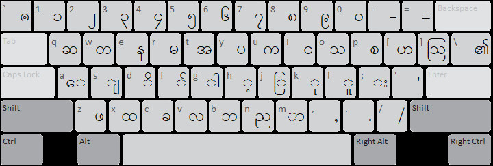
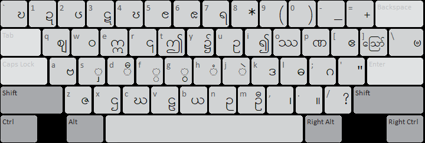

မြန်မာလက်ကွက် ဇယားသည် ဝင်းလက်ကွက် နှင့် အများအားဖြင့် ဆင်တူပါသည်။ မြန်မာယူနီကုဒ်သည် အက္ခရာတစ်ခုမှ ပုံသဏ္ဌာန် ကွဲပြားသော စာလုံးပုံ အမျိုးမျိုးကို ခလုတ်တခုတည်း (ကုဒ်တစ်ခုတည်း ) ဖြင့်တည်ဆောက်ထားပါသည်။
ဆိုလိုသည်မှာ ရရစ် ( အကြီး အသေး အပြတ် ) အမျိုးမျိုး မရှိပါ။ ကီးဘုတ်ပေါ်တွင် ရရစ်တခုသာ တွေ့ရပါမည်။ ထို့အတူ တစ်ချောင်းငင် နှစ်ချောင်းငင် အရှည်ကိုလည်း တွေ့ရမည်မဟုတ်ပါ။ စာလုံးပေါင်း သတ်ပုံအတိုင်း ရိုက်နှိပ်သွားပါက လိုချင်သော စာလုံးပုံစံကို အလိုလျောက် ပြောင်းလဲ ပေးပါလိမ့်မည်။
မြန်မာစာ လက်ရေးရေးသည့် အစီအစဉ်အတိုင်း ရိုက်သွားရုံသာ ဖြစ်ပါသည်။ မြန်မာစာကို ရေးတတ်သူတိုင်း ကွန်ပျူတာတွင် ရိုက်နိုင်ရန် ပြုလုပ်ထားသည့် ယခု ၂၁ ရာစုခေတ် နည်းပညာ ဖြစ်ပါသည်။
၁။Myanmar3 လက်ကွက် ဇယား
Shift မနှိပ်ထားပုံ

Shift နှိပ်ထားပုံ

စာလုံးဆင့်များရိုက်နှိပ်လိုပါက အဆင့်ခလုတ် [ F ] shift + f ကိုရိုက်နှိပ်ပြီး ဆင့်လိုသော အက္ခရာကို ဆက်ရိုက်လိုက်ပါက စာလုံးဆင့် ဖြစ်သွားပါလိမ့်မည်။
စာလုံးအချို့ကို နမူနာအဖြစ် အောက်ပါဇယားတွင် ရိုက်နှိပ်ပုံအဆင့်ဆင့်ကို ဖေါ်ပြအပ်ပါသည်။ ရရစ် အက္ခရာကို ဗျည်းနောက်မှ ရိုက်ရပါမည်။ ိ ု ၊ ု ံ ၊ ံ ့ ကဲ့သိုသော
အပေါ်အောက် စာလုံးများကို နှစ်သက်ရာ အရင်ရိုက်နိုင်ပါသည်။ ၎င်းအစီအစဉ်များကို တမျိုးတည်း ဖြစ်စေရန် အလိုလျောက် ပြင်ဆင်ပေးပါလိမ့်မည်။
| စာလုံးပုံ |
စာလုံးပေါင်းပုံ |
အင်္ဂလိပ်ကီးခလုတ် |
| ကျူ |
က + ျ + ူ |
u + s + l |
| ကျို |
က + ျ + ိ +ု |
u + s + d + k |
| ကျောင်း |
ေ+က+ျ+ာ+င+ ်+ း |
a + u + s + m + i + f + ; |
| ကျွမ်း |
က+ ျ + ွ + မ + ် + း |
u + s + G + r + f + ; |
| ကြီး |
က+ ြ + ီ + း |
u + j + D + ; |
| ခြုံ |
ခ+ြ + ု+ ံ |
c + j + k + H |
| မြို့ |
မ + ြ + ိ + ု + ့ |
r + j + d + k + h |
| ကြွေး |
ေ + က + ြ + ွ + း |
a + u + j + G + ; |
| မြှင့် |
မ + ြ + ှ + င + ် + ့ |
r + j + S + i + f +h |
| ငြှိုး |
င + ြ + ှ + ိ + ု + း |
i + j + S + d + k + ; |
| စက္ကူ |
စ + က + ္ + က + ူ |
p + u + F + u + l |
| လိမ္မော် |
လ + ိ + မ + ္ + ေ + မ + ာ + ် (သို့)
လ+ ိ + ေ + မ + ္ + မ + ာ + ် |
v + d + r + F + a + r + m + f (or)
v + d + a + r + F + r + m + f |
| အင်္ဂါ |
အ + င + ် + ္ + ဂ + ါ |
t + i + f + F + : + g |
| အင်္ကျီ |
အ + င + ် + ္ + က + ျ + ီ |
t + i + f + F + u + s + D |
| သင်္ဘော |
သ + င + ် + ္ + ေ + ဘ + ာ |
o + i + f + F + a + b + m |
| ဥက္ကဋ္ဌ |
ဥ + က + ္ + က + ဋ + ္ + ဌ |
U + u + F + u + # + F + X |
| ဂုဏဝုဍ္ဎိ |
ဂ + ု+ ဏ+ ဝ + ု+ ဍ + ္ + ဎ + ိ |
: + k + P + W + k + ! + F + ~ + d |
| သဏ္ဌာန် |
သ + ဏ + ္ + ဌ + ာ + န + ် |
o + P + F + X + m + e + f |
| ဘဏ္ဍာ |
ဘ + ဏ + ္ + ဍ + ာ |
b + P + F + ! + m |
| ဣန္ဒြေ |
ဣ + န + ္ + ေ + ဒ + ြ (သို့)
ဣ + ေ + န + ္ + ဒ + ြ |
E + e + F + a + K + j (or)
E + a + e + F + K + j |
| ခြင်္သေ့ |
ခ + ြ + င + ် + ္ + ေ + သ + ့ |
c + j + i + f + F + a + o + h |
| သိင်္ဂီ |
သ + ိ + င + ် + ္ + ဂ + ီ |
o + d + i + f + F + : + D |
| သင်္ဂြိုဟ် |
သ + င + ် + ္ + ဂ + ြ + ိ + ု + ဟ + ် |
o + i + f + F + : + j + d + k + [ + f |
| သင်္ချိုင်း |
သ + င + ် + ္ + ခ + ျ + ိ + ု + င + ် + း |
o + i + f + F + c + s + d + k + i + f + ; |
| ဓါတု (သို့) ဓာတု |
ဓ + ါ + တ + ု (သို့) ဓ + ာ + တ + ု |
L + g + w + k (or) L + m + w + k |
| ပုဏ္ဏေးမ |
ပ + ု + ဏ + ္ + ေ + ဏ + း + မ (သို့)
ပ + ု + ေ + ဏ + ္ + ဏ + း + မ |
y + k + P+ F + a + P + ; + r (or)
y + k + a + P + F + P + ; + r |